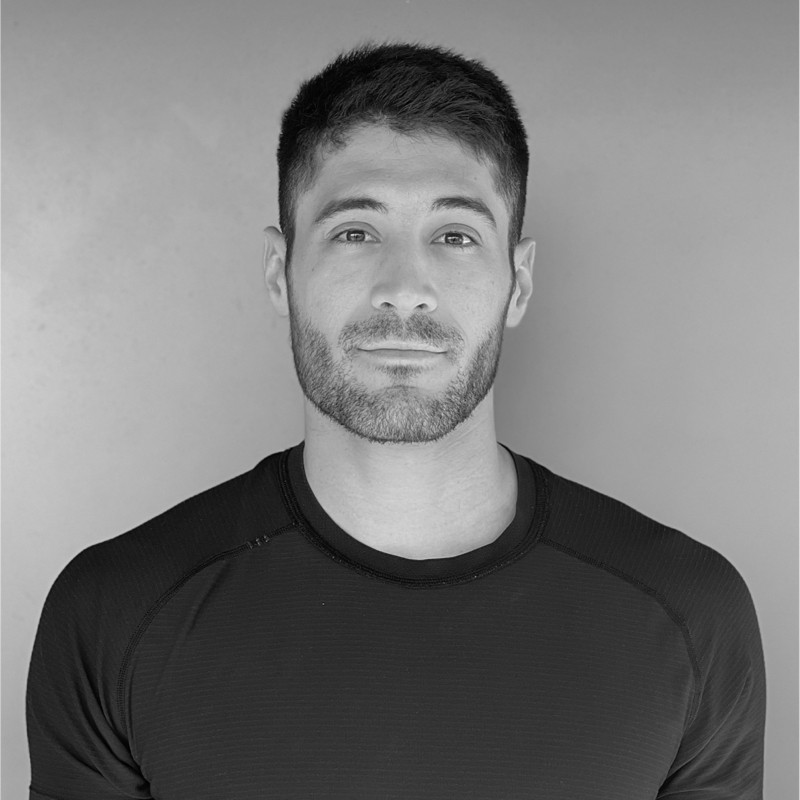
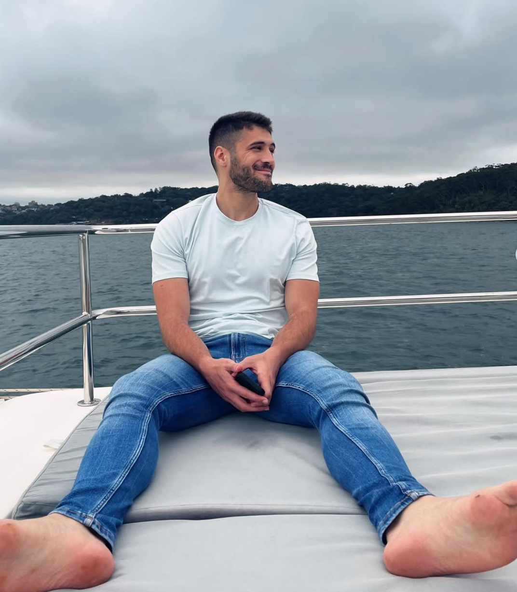

Financial precision
FX, derivatives and banking operations. Careful reconciliation, accurate settlements and attention to the details that matter.
FX / Swaps / Reconciliation
Ivan Martin-Benito Fernandez
Finance professional. Performance mindset.
A people-first approach to moving things forward.

Currently at Mizuho Bank
FX & Derivatives Officer
01 / The person behind the profile
I'm Ivan, a Sydney-based finance professional with a background in sports science, coaching and trading.
From FX settlements to helping people perform at their best, I bring the same mindset: be reliable, stay curious and make the team stronger.
Finance professional. Team player. Lifelong learner.
02 / What I bring
FX, derivatives and banking operations. Careful reconciliation, accurate settlements and attention to the details that matter.
FX / Swaps / Reconciliation
A sports science foundation, a track record in coaching and a practical approach to measuring progress and achieving goals.
Coaching / Sales / Progress
Clear communication, trusted relationships and a collaborative spirit. Supporting colleagues and clients to do their best work.
Teamwork / Mentoring / Trust
03 / The experience
From building human performance to keeping financial operations moving.
The common thread is trust.
Jun 2024 - Present
Sydney
FX & Derivatives Officer
FX & derivatives
Mar 2023 - Jun 2024
Sydney
Operations Officer
Banking operations
Oct 2021 - Oct 2022
Sydney
Assistant Trader
Market research & trading
Jun 2019 - Mar 2023
Wynyard, Sydney
Senior Coach to Team Leader
Coaching & leadership
04 / The foundation
Education
Bachelor of Health Science
Sports & Exercise Science
September 2010 - June 2014
Biomechanics, Advanced exercise physiology
Human movement, Athletics, Football
Sagrado Corazon Zamora High School, Spain
Electives: Physics, Math, Mechanical Tech and IT
Languages
Spanish - Native
English - Full professional proficiency
Tools
Microsoft Office, Google G Suite
Sports software, Graphic design programs
Certifications
Rehab coach, Tennis coach
05 / Beyond the job title
The curiosity I bring to work doesn't stop at the end of the day.

I love staying active, exploring new places and seeing things from a different perspective, whether I am playing football, snowboarding or taking photos.
06 / Giving back
Cam Caritas Zamora
Supporting children and families facing social and economic challenges. Creating events and games that build connection and a positive environment.
07 / Let's connect
Good conversations are
where great things begin.
Finance / Performance / People